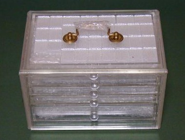

Tile colection 珍奇牌。
（９）透明牌
香港製の合成樹脂牌。牌そのものは最近のもの（といっても購入したのは１５年くらい前）。箱/引き出し/牌、すべてが透明な素材でできているのが特徴。というより、唯一それが売り。下段は牌を収納した状態。

牌のクローズアップ写真（ちとデカすぎたので、欄外へ）
左側の牌が裏からみた状態、右は牌面からみた状態。裏から表まで完全に透き通っていては、牌種がモロばれとなってしまう。そこで牌面は乳白色の不透明な素材を使用している。
牌面は、どうということのない普通の牌。裏からみたとき、これも単に透き通っているだけでは牌面の乳白色の背中がみえるだけで面白味に欠ける。そこで真ん中は完全に透明な素材としても、背中側は白銀色で筋模様の入った素材を使い、裏から見たときの美しさを演出している。
下段が牌を伏せて引き出しに収めた状態（もちろん引き出しも透明素材）。この状態で見ていると、牌の背中側がキラキラして、実物は写真より綺麗である。まぁ、一言で云ってしまうと、見た目の綺麗さだけが売り物の牌。
このような牌が作られるのは、まだ日本以外では自動卓など普及しておらず、手積み牌が一般的だからである（最近は中共で、日本メーカーが自動卓の販売を始めたようだ）。
自社製品を購入してもらうため、このような目先の変わった商品をいろいろ製造し、消費者にアッピ−ルしているわけである。